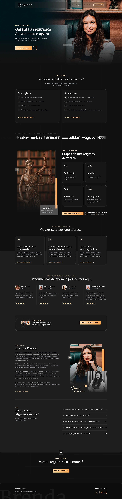

Evite problemas jurídicos, proteja o que é seu com quem realmente entende do assunto.
Registrar a sua marca é o primeiro passo para proteger a identidade do seu negócio.
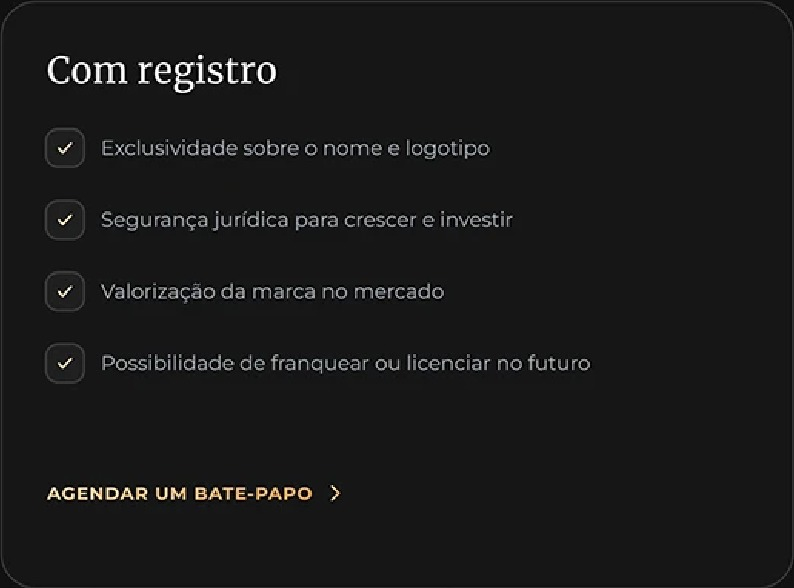
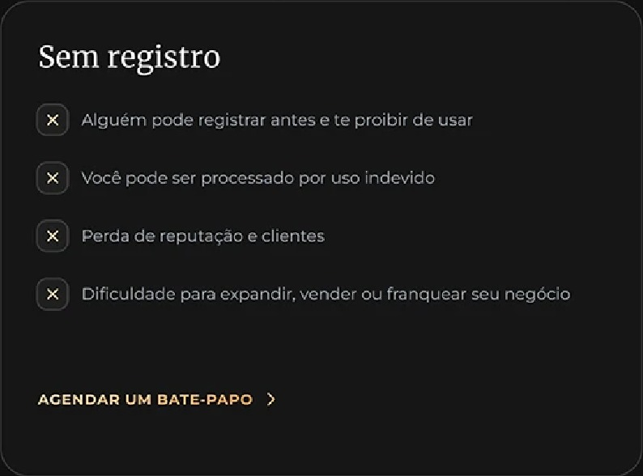
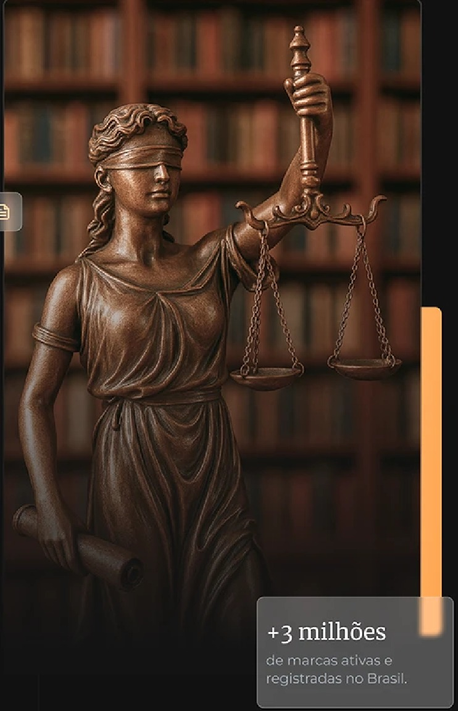
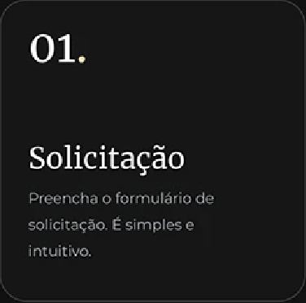
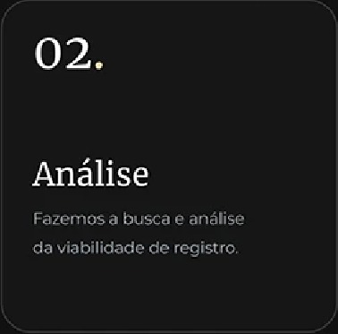
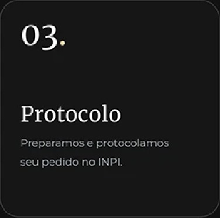
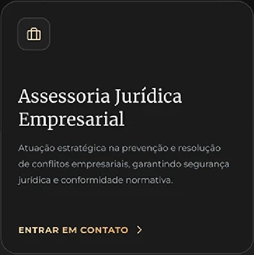
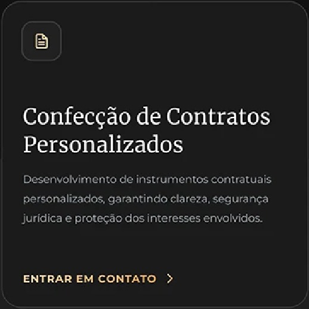
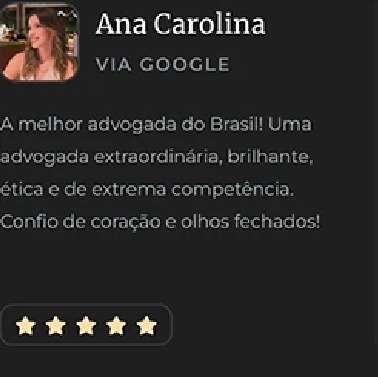
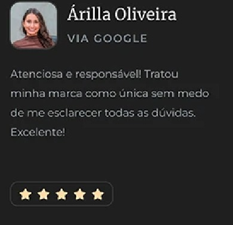
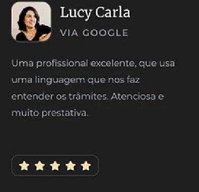
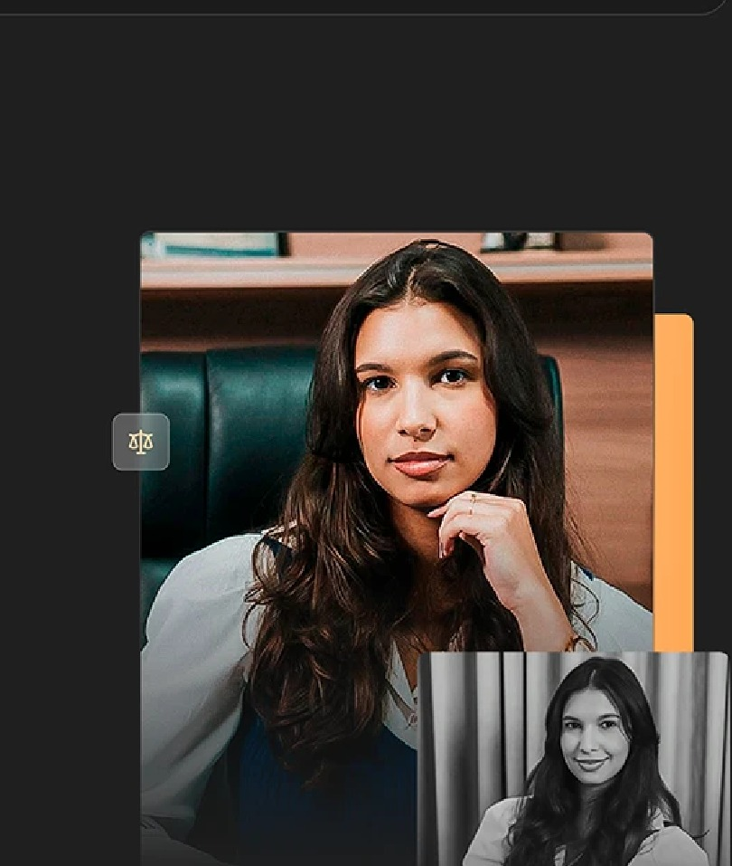
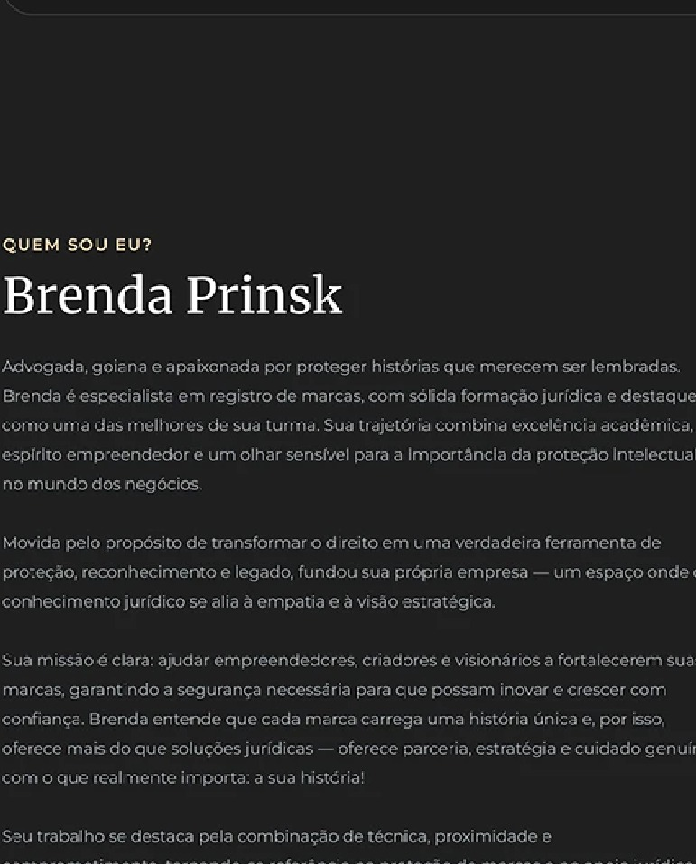
O que é o registro de marca e por que é importante?
Quem pode registrar uma marca?
Qual é o tempo para uma marca ser registrada?
Quais são os riscos de não registrar a minha marca?
O que é pesquisa de anterioridade?